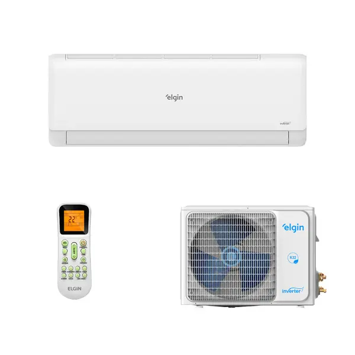

Potência ideal para ambientes residenciais Com 12.000 BTUs, este ar-condicionado split inverter é perfeito para quartos, salas e escritórios de médio porte. Ele proporciona resfriamento rápido e mantém a temperatura estável, garantindo conforto térmico mesmo nos dias mais quentes. Tecnologia Eco Inverter III: mais economia e silêncio A tecnologia Eco Inverter III da Elgin ajusta o funcionamento do compressor de forma inteligente, reduzindo o consumo de energia e evitando oscilações de temperatura. Além disso, o aparelho opera com baixo nível de ruído, ideal para ambientes de descanso e trabalho. Wi-Fi integrado para controle total Com Wi-Fi integrado, você pode controlar o ar-condicionado diretamente pelo smartphone, de onde estiver. Ajuste temperatura, programe horários e acompanhe o funcionamento com praticidade, trazendo mais comodidade e automação para sua rotina. Design moderno e fácil integração ao ambiente O design clean e contemporâneo do ar-condicionado Elgin Eco Inverter III combina com qualquer estilo de decoração. Seu acabamento discreto valoriza o espaço e garante uma solução funcional e elegante para a climatização residencial. Conforto térmico inteligente para todos os momentos Ter um ar-condicionado split inverter com Wi-Fi é investir em bem-estar, economia e praticidade. Ele cria ambientes agradáveis para relaxar, trabalhar ou dormir melhor, sempre com a temperatura ideal. Além de oferecer alto desempenho e eficiência energética, este modelo contribui para a valorização do imóvel e para um consumo mais consciente. Com a qualidade Elgin e a confiança da Leroy Merlin, você garante tecnologia, durabilidade e conforto.